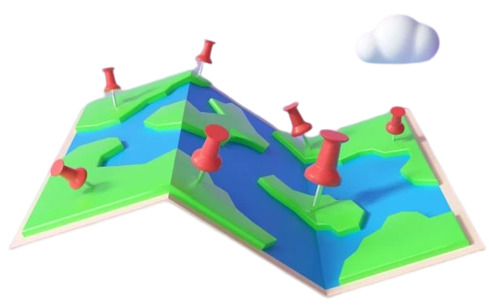
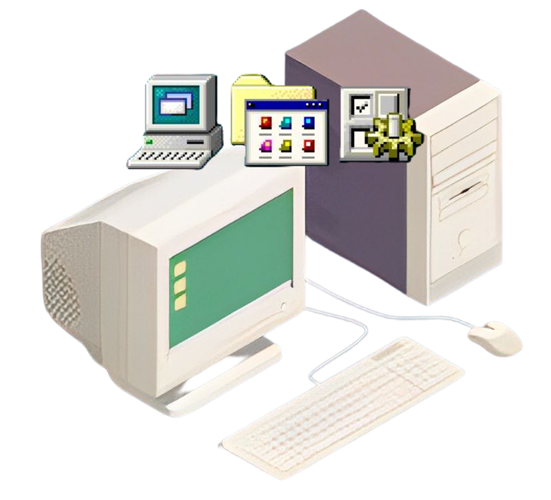
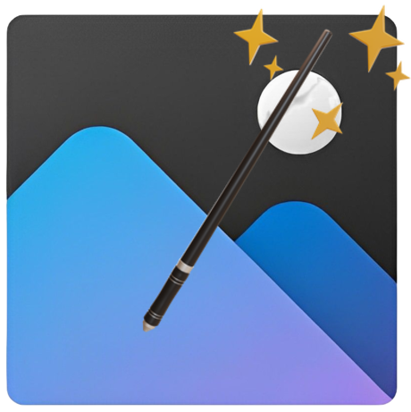

WebSites Interessantes
Régis Cardoso
[Muni Maggi]

MapCrunch
Explore o Street View do mundo todo aleatoriamente!
WayBack Machine
Volte no tempo ao acessar versões antigas de websites!
TVs Retrô
Volte no tempo ao assistir programas antigos!
Ambient Mixer
Simule ambientes específicos através de efeitos sonoros!

EmuOS
Simule sistemas operacionais (PC) antigos!

PicWish
Faça magia com as suas imagens! Retira o fundo, restaura a qualidade etc.
↑ Retornar ao topo da página
📚 Recomendações de Livros
📺 Recomendações de Séries
« Retornar à Página Inicial